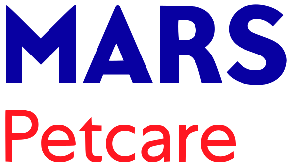

01 / PRODUCT EXPERIENCE
Built in the real world.

MARS / ECOMMERCE PRODUCT OWNERSHIP
Scaling retailer analytics.
From Amazon to five major retailers: governed data, enterprise deployment, and adoption.
MARS / NLP / INTERACTIVE RECONSTRUCTION
Listen beyond the star rating.
Explore category sentiment, brand comparisons, and customer themes in a working demo dashboard.

EXPEDIA / EXPERIMENTATION
Did the marketing actually work?
TVSquared integration, ghost ads, and Blue Jays sponsorship: connecting media exposure to customer response.
SRC / INVESTMENT RESEARCH / INTERACTIVE DEMO
Find the fit. Question the deal.
A deal screener that turns company data into thesis checks, open questions, and a focused diligence plan.
From insight to action.
My background spans enterprise analytics at Mars, experimentation at Expedia, and investment diligence. I bring that business context to hands-on work with Python, SQL, and machine learning.